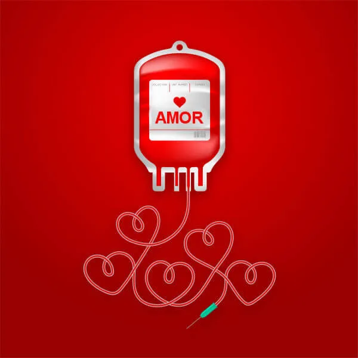

seja um doador de sangue
- Home
- Contato
o ato de doar-se significa ajudar o próximo, faze-lo feliz de alguma forma, por mais simples que seja sua ação. a cada ajuda, um mérito próprio.
Venha fazer parte do maior movimento de ajuda humanitária do mundo! Precisamos da sua ajuda para continuar espalhando ESPERANÇA e DIGNIDADE.
